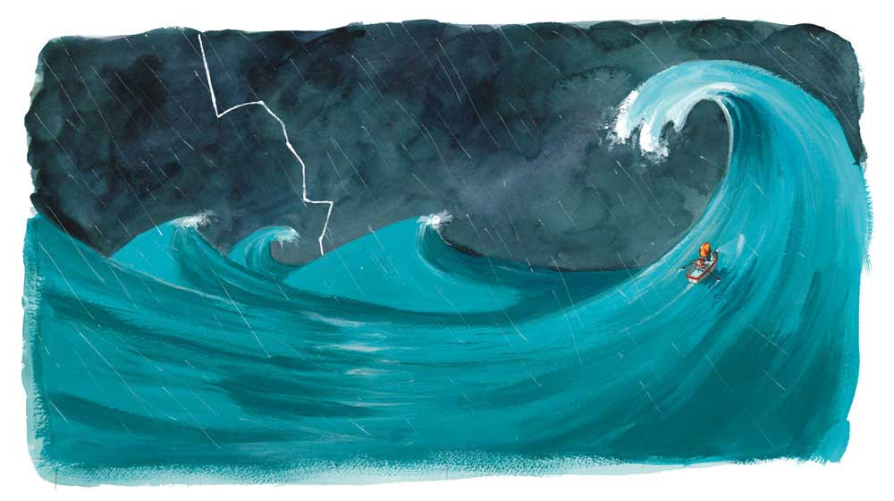

LOST AND FOUND
scroll slowly and enjoy

Based on The Story By Oliver Jeffers
Produced By Liana Presnakova
One day there was
a
boy...
and one day he found a penguin at his door
The boy didn't know where it had come from but it began to follow him
everywhere. The penguin
looked sad and the boy thought it must be lost
So the boy decided to help the penguin find its way home
He checked in the lost and found office but no one is missing
a penguin.
He asked some birds if they know where the penguin came
from.
But they ignored
him some birds are like that.
The boy asked his duck
But the duck floated away he didn't know.
That night The couldn't sleep for disappointment he wanted to help the penguing but didn't know
how.
The next morning he discovered that penguins come from the South Pole but how could he get
there.
He ran down to the harbour and asked the big ship to take them to the South Pole but his voice
was much too small to be heard over the ship's horn.
So together he and the penguin would row to the South Pole. The boy took his rowboat out of the
cupboard and they tested it for size and strength.
They packed everything they would need....
and together they pushed the rowboat out the sea.
They wrote South for many days... and nights with the boy telling stories all the way the
penguin listened to everything that the boy said.

They floated through good weather and bad, when waves were as big as mountains.
...Until they came to the South Pole.

The boy was delighred but the penguin said nothing suddenly it
looked sad again and the boy helped her out of the boat .
and floated away. But as he looked back, the penguin looked sadder than
ever.
It felt strange to be on his own...
and the more he thought...
The more he realised he made a big mistake.
The penguin wasn't lost he was just lonley.
Quickly he turned the boat around and headed back to the South
Pole as fast as he could.
At last he reached The Pole again.
But where was the
penguin?
The boy searched and searched but he was nowhere to be found
sadly the boy set off for home.
There was no point telling stories because there was no one to
listen exept the wind and the waves.
But then the boy saw something in the water ahead of him closer and closer he got, until he
could see...
...The penguin.
and so the boy and his friend went home together talking of
wonderful things all the way.
The End.